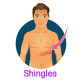

herpes zoster
Rx
1-Tab Acyclovir 400mg N=70 2tab q5h
2- Tab Gabapentin 100 mg n=10 qd
3- Gel Lidocaine
نکات:
1-درگیری بصورت درماتومی است
2- بیماران سابقه آبله مرغان دارند
3- توصیه میشه آزمایش سی بی سی انحام شود
4- برای جلوگیری از عارضه ازوفاژیت آسیکلوویر، با آب فراوان خورده شود و تا نیم ساعت دراز نکشد.
1️⃣ درماتیت تماسی
2️⃣ نورالژی تریژمینال
Ulcerative keratitis 3️⃣
4️⃣ سنگ کلیه
Coxsackievirus infection 5️⃣
6️⃣ کولیک صفراوی
7️⃣ کله سیستیت
8️⃣ آپاندیسیت
Atypical measles 9️⃣
🔟 Superficial pyoderma
1️⃣1️⃣ آنژین قلبی
Herpangina 1️⃣2️⃣
Furunculosis 1️⃣3️⃣
1️⃣4️⃣ زرد زخم
1️⃣5️⃣ کاندیدیازیس
1️⃣6️⃣ گزش
1️⃣7️⃣ درماتیت هرپتی فرم
1️⃣8️⃣ drug eruptions
1️⃣9️⃣ سلولیت
2️⃣0️⃣ آبله مرغان